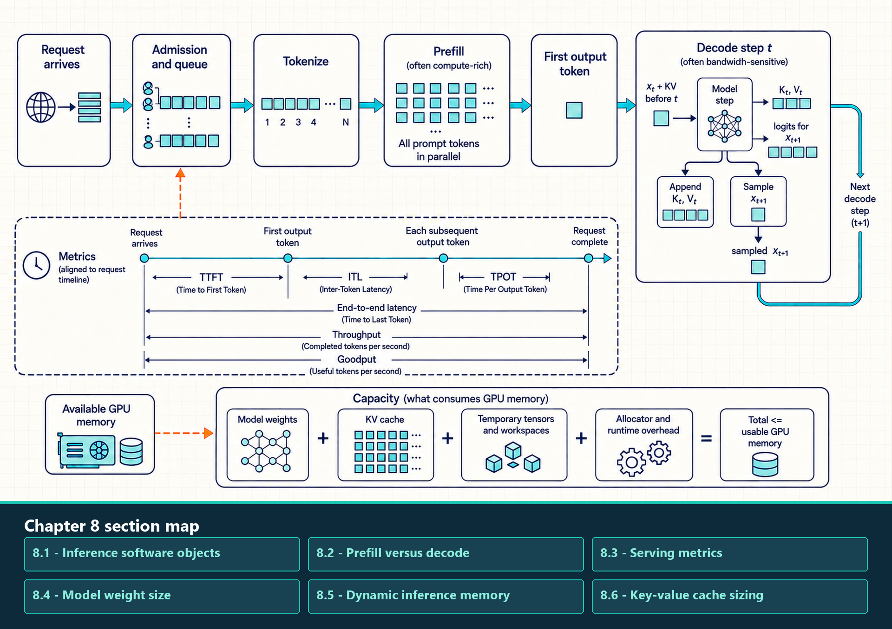

8 Inference Workloads
The training chapter followed a workload that changes model parameters. Inference starts from fixed parameters and repeatedly applies them to a request, but it still creates live software and memory objects: token IDs, temporary activations, logits, sampler state, request metadata, and a key-value cache that grows with the context.
One request has two different GPU phases. Prefill processes many prompt positions and creates the initial cache; decode adds one token per active sequence and rereads weights plus historical cache state. Their shapes, reuse, and user-visible latency metrics differ, so neither phase should be assigned a bottleneck before it is measured.
The tokenizer, checkpoint, model, and inference-mode interfaces define the single-request baseline. Prefill and decode then establish the service metrics needed to size static parameters, batch-dependent state, and KV-cache capacity. That byte budget determines which cache layouts and allocation policies are practical in Chapter 9.
Serving begins before the first GPU kernel: a request waits for admission, is tokenized, runs prompt prefill, and then enters a repeated one-token decode loop.

Each decode step reads the previous KV state, produces a new key and value pair plus logits, appends the new cache entry, and selects the next token. Time To First Token (TTFT), Inter-Token Latency (ITL), Time Per Output Token (TPOT), throughput, and goodput describe different parts of this path. The capacity budget must include weights, KV cache, temporary work, and allocator reserve.
8.1 Inference software objects
An inference request crosses several software objects before GPU kernels run. Tokenizer code creates token IDs, a model interface loads and executes the checkpoint, generation utilities control the baseline token loop, and a serving engine later adds shared scheduling and cache management.
8.1.1 Tokenizers and token-count effects
A tokenizer is the CPU-side software that maps text to token IDs and back. Its vocabulary, normalization, special-token policy, and segmentation algorithm determine the token count that drives prefill work, decode length, and KV-cache growth.
AutoTokenizer: A Hugging Face Transformers factory that loads the tokenizer configuration associated with a checkpoint and returns token IDs, masks, and batch encodings.- SentencePiece: A tokenizer implementation family used by many model checkpoints. Its model file defines the segmentation and vocabulary used to create token IDs.
- Hugging Face Tokenizers: A high-performance tokenizer implementation used by many Transformers workflows for batching, truncation, padding, and special-token handling.
- Performance consequence: More tokens increase prompt processing, generated steps, and KV-cache state even when the original character count is unchanged.
For a particular input and chat template, the tokenizer produces the input token IDs and fixes the prompt length. That length sets prefill work and the initial KV-cache size. The number of later decode steps depends instead on stopping criteria, requested output limits, and generation settings.
8.1.2 Model and checkpoint interfaces
A model interface creates the architecture and connects it to checkpoint tensors. Checkpoint loading determines storage format and startup behavior; execution performance is later determined by placement, dtype, compiled or library kernels, and the serving runtime.
AutoModelForCausalLM: A Hugging Face Transformers factory for autoregressive language-model architectures and checkpoints. It is useful for experiments, correctness checks, and baseline generation loops.safetensors: A tensor serialization format designed for safe, direct metadata inspection and efficient checkpoint loading. It owns storage and loading, not batching or kernel selection.- Model configuration: The architecture metadata that defines layer count, hidden dimensions, attention heads, vocabulary, and other dimensions needed to construct the model before weights are loaded.
- Checkpoint tensors: Persistent parameter values loaded into CPU or GPU memory. Their format and placement affect startup and capacity, while the selected runtime path controls steady-state execution.
Separately, the model configuration defines the architecture and tensor shapes, while checkpoint loading places the stored parameters in memory.
8.1.3 Generation utilities and framework inference modes
Framework generation utilities provide a readable baseline token loop. PyTorch model mode and autograd mode must both be set correctly so inference uses evaluation behavior and avoids training-only bookkeeping. They do not by themselves make sampling or GPU execution deterministic.
- Generation utilities: Transformers helpers for cache-aware generation, sampling, beam search, stopping conditions, and token-loop control. They are convenient for experiments and baseline measurements.
model.eval(): Changes module behavior such as dropout and batch-normalization statistics for evaluation or inference.torch.no_grad(): Disables gradient recording for enclosed operations, reducing autograd work and activation retention.torch.inference_mode(): A stricter inference context that also disables view tracking and version-counter updates for tensors created inside it.- Combined use: Inference normally uses
model.eval()with an appropriate gradient-disabling context. One controls module semantics; the other controls autograd bookkeeping.
These preparation paths meet when the application passes the token IDs to the loaded model. Evaluation mode controls module behavior, and an inference context disables gradient bookkeeping during the generation loop. Chapter 10 introduces a serving engine when many requests must share admission control, batching, KV-cache blocks, and operational metrics.
8.2 Prefill versus decode
Prefill and decode are two phases inside autoregressive inference serving. They use the same model weights, but they create different tensor shapes and stress different hardware resources. Separating them makes phase-specific measurement and optimization possible.
- Prefill: Processes the prompt tokens, computes attention over the input prefix, and writes the initial key-value cache. It creates persistent KV state for later decode steps as well as temporary work, and usually has many tokens available at once.
- Decode: Generates one new token per active sequence and appends new keys and values to the cache. It repeats many times and often has less arithmetic reuse per request.
The first comparison holds the model fixed and contrasts the two phases by input shape, likely limiting work, user metric, and available token parallelism.
| Dimension | Prefill | Decode |
|---|---|---|
| Input shape | Many prompt tokens | One new token per active sequence |
| Common limiting work | Projection and attention compute over the prompt; short prompts may still expose launch or scheduling cost | Weight and KV reads, launches, and scheduler delay; the dominant bytes depend on batch and context |
| User metric | TTFT | TPOT |
| Parallelism | High token parallelism | Low per-request parallelism, improved by batching |
The arithmetic-intensity difference comes from reuse. During prefill, a batch contains many token positions, so projection weights and attention tiles can be reused across a larger matrix-shaped computation. During decode, each active sequence contributes only one new query token, while the step still reads model weights and a growing KV history. The same transformer block therefore behaves more GEMM-like in prefill and more GEMV-like or cache-streaming in small-batch decode.
| Phase | Reuse pattern | Arithmetic-intensity consequence | Capacity consequence |
|---|---|---|---|
| Prefill | Many prompt tokens reuse weights and attention tiles | Higher arithmetic intensity; tensor-core utilization is easier to recover | Long prompts mainly increase TTFT and temporary activation/workspace pressure |
| Decode | One new token reads weights and all relevant cached K/V state | Lower arithmetic intensity; HBM bandwidth, launch gaps, and scheduler overhead become visible | Long contexts and high concurrency mainly increase TPOT pressure and KV-cache capacity pressure |
| Continuous batching | Combines many one-token decode steps into a larger launched step | Improves useful work per launch but cannot remove serial dependence inside each sequence | Raises throughput until KV memory, latency targets, or scheduler cost becomes limiting |
Attention-to-hardware consequence
Prefill: Many query positions reuse projection weights and process attention tiles together. The work is GEMM-like, so arithmetic intensity and tensor-core utilization can be high.
Decode: Each active sequence contributes one new query while the kernel reads the historical K/V state. The work is smaller per sequence and more dependent on HBM traffic, cache layout, launch overhead, and scheduler timing.
Optimization test: Measure FLOPs, bytes, and phase-specific latency separately. A prefill optimization can improve TTFT while doing little for TPOT, and a decode optimization can increase throughput while consuming more KV-cache capacity.
The phase split now gives the first measurement boundary. TTFT describes the path through admission and prefill to the first generated token; TPOT and inter-token latency describe the repeated decode path.
8.3 Serving metrics
Inference metrics describe different stakeholders. A user notices the first token, the smoothness of streaming, and total completion time. An operator notices tokens per second, requests per second, GPU utilization, and cost. A product Service Level Agreement (SLA) turns these into promises such as ‘95% of requests under a latency threshold.’
One-request timestamp trace
- Record request arrival, first-token emission, each later token emission, and completion.
- TTFT: Arrival to first-token emission.
- ITL: Each gap between consecutive output-token emissions.
- TPOT in this chapter: Excludes the first token and is the mean of the
n - 1decode intervals after first-token emission for a request withn > 1output tokens. Other systems may aggregate TPOT differently; do not combine those conventions without relabeling or recomputing them. - End-to-end latency: Arrival to completion.
Workload and operator metrics
- Report distributions of the chosen request-level measures, such as p50 and p95, without silently changing their aggregation convention.
- Throughput: Tokens or requests completed per second; state prompt length, output length, and workload mix.
- QPS, goodput, and cost: Must be tied to the SLA and quality target. Goodput counts only completed work that meets those targets.
\[ \text{E2E latency} \approx \text{TTFT} + (\text{number of output tokens} - 1) \times \text{TPOT} \tag{8.1}\]
In this approximation, the first output token is already included in TTFT. A response with n output tokens therefore contains n - 1 later decode intervals. TPOT is an average here; a production trace should also inspect the distribution of inter-token latency as batching, cache length, and scheduling change.
For example, if TTFT is 700 ms, the response has 20 output tokens, and average TPOT is 35 ms, then E2E latency is about 700 + 19 * 35 = 1365 ms. Long prompts mainly push TTFT because prefill must process many input tokens before streaming can begin. Long generations mainly push E2E latency through repeated decode steps. This is why the same optimization can improve one metric and harm another: larger batches can increase throughput and utilization while increasing queueing, TTFT, or ITL.
8.4 Model weight size
Parameter sizing estimates the static model-weight footprint. It answers a different question from KV-cache sizing: weights are loaded once per replica or shard, while KV cache grows with active serving state. The estimate is useful for deciding whether a model fits on one GPU, one node, or a distributed group.
A transformer block is dominated by projection matrices. The formulas below are first-order approximations; exact counts depend on vocabulary size, tied embeddings, grouped-query attention, bias terms, feed-forward expansion ratio, and architecture-specific details.
- Embeddings and language-model head: V * d parameters when the input embedding and output head share weights; an untied design contributes roughly 2 * V * d.
- Self-attention projection weights: about 4 * d^2 for standard full multi-head attention with d-by-d query, key, value, and output projections. Grouped-query and multi-query attention use smaller key/value projections.
- Multi-Layer Perceptron (MLP/FFN) Weights: 8 × d² parameters. This consists of the up-projection (d-by-4d) and down-projection (4d-by-d). For models using SwiGLU activations such as Llama, the gate and up projections use a hidden size near 8/3 × d, so three matrices contribute about 3 × (8/3 × d²) = 8 × d² parameters. Adding bias terms adds comparatively little.
\[ \text{total parameters per block} \approx 12 d^2 \tag{8.2}\]
The symbols below define the estimate and the conversion from parameter count to stored bytes. They also mark what the block approximation leaves outside its boundary.
- V: Vocabulary size.
- d: Model hidden dimension.
- Block estimate: Approximate parameter count inside one transformer layer, excluding embedding and final output details unless stated.
- Memory conversion: Parameter count becomes bytes after multiplying by storage precision, such as 2 bytes for FP16/BF16 or fewer for supported quantized weights.
The local derivation is attention projections plus feed-forward projections: 4 × d² for Q, K, V, and output projection, plus about 8 × d² for the MLP, giving about 12 × d² per layer. With d = 4096, one block has about 12 × 4096² = 201,326,592 parameters. At 2 bytes per FP16/BF16 parameter, that block is about 402.7 MB before runtime workspaces, replica overhead, or quantization.
8.5 Dynamic inference memory
Batch shape is the actual tensor and scheduler shape admitted to the GPU. In LLM serving, a batch contains sequences with different prompt lengths, generated lengths, cache states, decode progress, and request count.
- Request batch size: The number of active requests. It is easy to count but insufficient for memory planning because one long request can consume more cache than many short requests.
- Tokens per iteration: The number of tokens actively processed in one forward pass (for example, all prompt tokens for new requests plus one token per decoding sequence).
- Tokens resident in KV cache: The total number of token positions retained across all active requests. Serving engines track both limits because one determines step time and the other determines memory capacity.
- Context length: The number of tokens a request can attend to. Longer contexts increase prefill work and KV-cache storage.
- Active cache blocks: Physical KV-cache blocks currently owned by admitted requests. This is the object that often limits concurrency.
- Prefill/decode mix: A batch can contain large prompt-processing work and one-token decode work. Mixing them improves utilization but can harm TTFT or inter-token latency if long prefill monopolizes the GPU.
Batch size improves hardware utilization only if memory can admit the active sequences. Sequence length and context length increase attention work and key-value cache size. A serving system therefore manages total batched tokens, cache blocks, the mix of prefill and decode work, and request count together.
8.6 Key-value cache sizing
Key-value cache sizing estimates the GPU memory consumed by stored attention keys and values for active requests. It is separate from model weight memory: weights are loaded once per replica, while the KV cache grows and shrinks with admitted sequences, context length, and generated tokens.
The first-order estimate multiplies active sequences, stored tokens, layers, key and value tensors, head geometry, and dtype size:
\[ \text{KV bytes} = B \times S \times L \times 2 \times H_{\text{kv}} \times D_{\text{head}} \times \text{bytes}_{\text{per element}} \tag{8.3}\]
The variables below identify the quantities in the estimate and connect each one to a serving decision.
- B: Active batch size or number of active sequences admitted by the serving scheduler.
- S: Sequence length stored in cache. This includes prompt tokens and generated tokens that remain in the attention context.
- L: Number of transformer layers that maintain KV state.
- 2: Two cached tensors per layer: keys and values.
- H with subscript kv: Number of key-value heads. This can be smaller than the number of query heads in grouped-query attention (GQA) or multi-query attention (MQA), which reduces cache size.
- D with subscript head: Head dimension for each key or value vector.
- bytes per element: Storage size for each cached element, such as 2 bytes for FP16/BF16 or fewer bytes for supported KV-cache quantization.
For example, B = 16, S = 4096, L = 32, key-value heads = 8, head dimension = 128, and 2-byte elements use 8,589,934,592 bytes: about 8.59 GB decimal or exactly 8 GiB. This is dynamic serving state, not model weight memory. Treat the formula as a lower bound; fragmentation, padding, metadata, and workspaces add overhead.
Worked real-scale example: Llama 3.3 70B
Example configuration: Use 80 transformer layers, 8 key-value heads, head dimension 128, one active sequence, 32,000 cached tokens, and BF16 storage at 2 bytes per element.
Substitution: The formula gives 1 x 32,000 x 80 x 2 x 8 x 128 x 2 = 10,485,760,000 bytes.
Calculated size: That is about 9.77 GiB for one sequence before block-table metadata, allocator fragmentation, scales, workspaces, and other live tensors. If 32K means 32,768 tokens rather than 32,000, the same calculation is exactly 10.00 GiB.
Serving consequence: A single long-context request can consume a material fraction of an 80-GB GPU even when the model weights are already resident. Concurrency planning must budget KV cache separately from weights.
Multi-head attention variants change the key-value head count in that formula. Query heads decide how many independent query projections are used for the current token. Key-value heads decide how many historical key and value streams must be stored and reread. GQA and MQA reduce cache memory because several query heads share fewer key-value heads.
| Attention form | Head relationship | KV-cache multiplier versus full MHA | Serving consequence |
|---|---|---|---|
| MHA | Each query head has its own key and value head | 1.0 | Highest KV-cache footprint; simplest mental model |
| GQA | Groups of query heads share fewer key and value heads | key-value head count divided by query head count | Retains more independent KV head groups than MQA; quality and kernel behavior still require measurement |
| MQA | All query heads share one key and value head | 1 divided by query head count | Smallest KV-cache footprint, but architecture quality and kernel support must be validated |
For a concrete GQA example, a 32-query-head model with 8 key-value heads stores one quarter as many KV head streams as full MHA: 8 divided by 32 is 0.25. If the same cache is also stored in 8-bit form instead of FP16/BF16, the raw element bytes are halved again before scale metadata and padding are added.
| KV-cache element format | Raw bytes per value | Multiplier versus FP16/BF16 | Caveat |
|---|---|---|---|
| FP16 or BF16 | 2 | 1.0 | Common baseline for cache sizing |
| FP8 or INT8 | 1 | 0.5 before scale metadata | Needs attention kernels and cache layout that support the format efficiently |
| INT4 | 0.5 | 0.25 before scale metadata | Can be attractive for capacity, but dequantization cost and attention quality are higher risk |
The byte count answers whether a planned set of requests can fit. It does not say where each request’s state should be placed or how attention kernels find it. Chapter 9 turns this capacity estimate into a layout problem: token order must remain logical even when physical blocks are allocated, reused, and read non-contiguously.